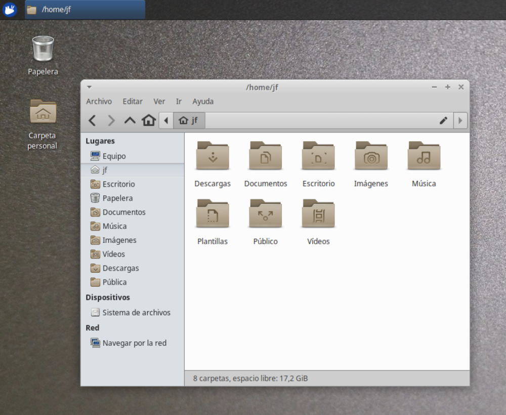
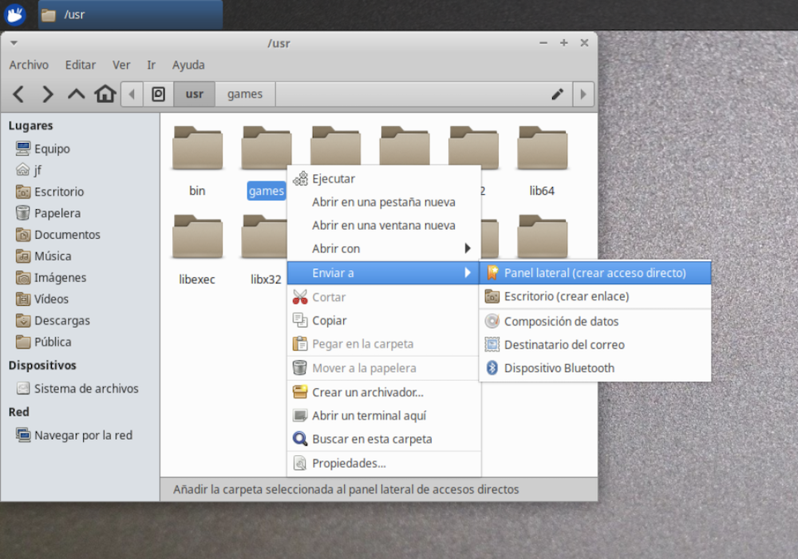
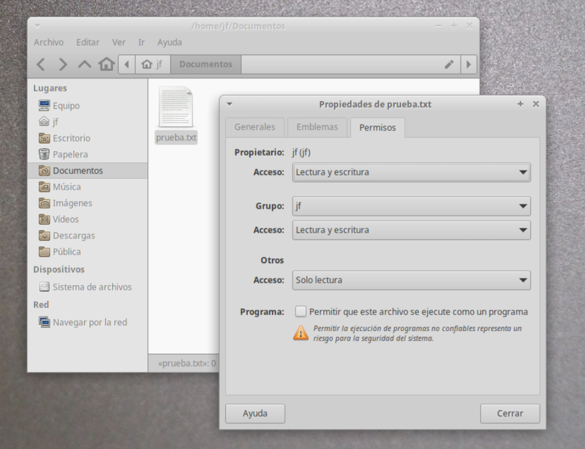

Carpetas en Linux¶
Una vez instalado Linux, antes de hacer nada conviene echar un vistazo al disco duro virtual, para entender como funcionan las carpetas. Si tenemos un Mac, veremos que hay cierta similitud, porque el sistema operativo de Apple, llamado Darwin, es un derivado de Unix BSD. Por el contrario, si venimos del mundo Windows, encontraremos bastantes diferencias.
Explorador de archivos¶
Cada escritorio proporciona su propio programa para navegar por la estructura de carpetas. El de Xfce es un programa llamado thunar, que encontraremos en el menú de programas, apartado accesorios > gestor de archivos.
Tenemos un acceso alternativo en el escritorio, un icono llamado “Carpeta personal”, sobre el que podemos pulsar para abrir el explorador.

El funcionamiento es similar al que encontraremos en otros sistemas operativos, Windows, etc. En principio se muestra la carpeta principal del usuario, que puede contener archivos varios y otras carpetas como Documentos, Música, Descargas, Escritorio, etc.
En la barra lateral tenemos varios enlaces. Pulsando en Sistema de Archivos iremos al directorio raíz del sistema. También veremos las carpetas compartidas con la máquina Host, los DVDs y otras unidades externas.
Para ir a una carpeta distinta de la actual, pulsar sobre ella, sobre un enlace de la barra lateral, o bien, introducir la ruta de búsqueda en la caja de edición superior. Otra posibilidad es usar el menú Ir.
Para crear un nuevo enlace en la barra lateral, navegar por el sistema de archivos hasta encontrar la carpeta a enlazar. Pulsar sobre ella con el botón secundario del ratón, y en el menú desplegable seleccionar Enviar a > Panel lateral. Pulsando en Enviar a escritorio, creamos en el mismo un enlace a una carpeta o archivo.

Para crear una carpeta dentro de la actual, usar el menú Archivo > Crear carpeta. Para crear una archivo dentro de la carpeta actual, Archivo > Crear documento.
Para buscar archivos, Xfce usa una aplicación llamada Catfish. Se puede iniciar desde el menú de aplicaciones, o desde el explorador de archivos, menú Archivo>Buscar.
Archivos ocultos¶
En los sistemas derivados de Unix, como es el caso de Linux y Mac, para marcar un archivo como oculto tenemos que modificar su nombre, anteponiendo un prefijo consistente en un punto. Por ejemplo, .miarchivo.txt se considerará como oculto.
En principio el explorador no muestra los elementos ocultos, salvo que activemos su visualización mediante el menú Ver.
Permisos¶
Linux es un sistema operativo heredado de Unix, que a su vez fue concebido para grandes instalaciones con múltiples usuarios y grupos de usuarios compartiendo documentos. En un ordenador personal esto puede parecer algo excesivo, pero así es como funciona.
Cada usuario pueden pertenecer a uno o varios grupos. Todo archivo tiene:
- un usuario propietario
- un grupo propietario
A un archivo puede acceder:
- su usuario propietario
- otros usuarios del grupo propietario
- el resto de usuarios
Y cuando accedemos a un archivo podemos hacer tres cosas:
- lectura: examinar su contenido
- escritura: modificarlo
- ejecutarlo como programa
Combinando todo esto, tenemos nueve permisos para un mismo archivo:
- Permisos de lectura, escritura y ejecución para el usuario propietario
- Permisos de lectura, escritura y ejecución para el resto de usuarios del grupo propietario
- Permisos de lectura, escritura y ejecución para el resto de usuarios
Para cambiar los permisos, podemos abrir el explorador de archivos, seleccionar el fichero en cuestión, y pulsar en el menú Archivo > Propiedades. Seguidamente, pulsar en la pestaña Permisos:

En el ejemplo, vemos un archivo de texto donde los permisos de ejecución están desactivados porque no se trata de un programa. El usuario propietario y los usuarios del grupo propietario pueden examinar y modificar el archivo. El resto de usuarios, solo examinarlo. Si este texto fuera un script con comandos a ejecutar, tendríamos que activar los permisos de ejecución correspondientes.
Directorios¶
En Windows cada unidad de almacenamiento (disco duro, dvd, unidades USB, etc) tiene por separado su propia estructura de directorios o carpetas, mientras que en los sistemas tipo UNIX, como Mac o Linux, existe un único arbol global de directorios. Cuando hacemos referencia a un archivo, no decimos en que disco está, sino en que carpeta. Por ejemplo:
-
en windows haríamos referencia a un archivo de la siguiente forma:
c:\nombrecarpeta\archivo.doc -
mientras que en sistemas tipo UNIX hacemos referencia al mismo archivo como:
/nombrecarpeta/archivo.doc
Véase que no se menciona la unidad de disco en absoluto. El directorio raiz se representa mediante /, y se asocia al disco principal del sistema. Los directorios y subdirectorios que “cuelgan” de la carpeta raiz estarán ubicados en el mismo disco, a excepción de aquellas carpetas que asociemos explícitamente a otra unidad.
Si por ejemplo asociamos la carpeta /media/dvd a la unidad lectora de dvd’s, el directorio raiz del dvd se corresponderá con esa carpeta. Si en el DVD hay una carpeta misarchivos, que contiene un fichero llamado texto.doc, este será accesible mediante /media/dvd/misarchivos/texto.doc.
Cuando asociamos una unidad externa a una carpeta, a esto se le llama “punto de montaje”.
Nótese que en UNIX las carpetas se delimitan con un carácter /. El uso de la barra invertida \ es propio de Windows y viene de ciertos problemas que tuvieron con el diseño de las primeras versiones del antiguo sistema operativo MS-DOS.
Un poco de historia
Lo que sucedió es que la versión original de MS-DOS estaba pensada para los primeros ordenadores personales de IBM, que no tenían disco duro. Los archivos se guardaban en diskettes extraíbles. Dada la poca capacidad de estos, no se había pensado en organizar los ficheros en carpetas.
Con la versión 2.0 de MS-DOS se pensó en añadir el mecanismo de directorios, pero la barra / ya estaba siendo utilizada para otros propósitos. Se usaba como prefijo de los parámetros de los comandos del sistema operativo. Microsoft consideró la posibilidad de usar un punto “.” como separador, pero ese carácter también estaba “pillado”. Se usaba para separar el nombre de un archivo de su extensión. Finalmente optaron por la barra invertida “\“. De ahí que Windows se haya convertido en “el rarito”. El resto de sistemas operativos usan la barra “/” como separador en una ruta de directorios.
Veamos a continuación las principales carpetas de un típico sistema de la familia UNIX. La estructura completa se conoce como filesystem.
¡Cuidado!
Linux es case sensitive. Se distingue mayúsculas de minúsculas. Un directorio o un fichero debe escribirse tal y como lo hemos creado. Por ejemplo. Documentos y documentos serían dos carpetas diferentes.
Directorio /¶
Toda la estructura de carpetas “cuelga” del directorio raíz, también llamado root, representado por una barra inclinada /. Todos los contenidos de las diferentes unidades de almacenamiento cuelgan de aquí.
El directorio / es el punto de montaje del disco principal del sistema.
Directorio /home¶
Es donde los usuarios guardan sus archivos: documentos, fotos, vídeos, música, etc. También incluye la configuración personal del usuario e incluso programas a los que solo él tiene acceso.
Dentro de /home cada usuario tiene su directorio:
- /home/julia
- /home/andres
- /home/pedro
En nuestro día a día, esta es la carpeta con la que vamos a trabajar principalmente.
Nota: en los ordenadores Mac, este directorio se llama /Users, en lugar de /home.
Directorio /media¶
Representa el punto de montaje de las unidades extraibles, USB, dvds, etc. Tradicionalmente UNIX ha utilizado para este propósito la carpeta /mnt, pero en las distribuciones linux actuales está muy extendido el uso de /media.
Nosotros vamos a utilizar /mnt para acceder a las carpetas compartidas de la máquina física.
Directorio /usr¶
El directorio /usr (User System Resources) se usa para ubicar las aplicaciones que instalemos. Suele tener las siguientes subcarpetas:
- /usr/bin
- /usr/include
- /usr/lib
- /usr/local
- /usr/sbin
- /usr/share
- /usr/src
Directorio /opt¶
Es complementario a /usr, almacenando sobre todo aplicaciones externas que se distribuyen en forma de paquete.
Directorio /bin¶
Es donde se almacenan los programas básicos de linux.
Directorio /sbin¶
Similar a /bin, pero aquí tenemos los programas relativos a tareas de administración del sistema, que suelen ejecutarse solo con permisos de administrador habilitados.
Directorio /lib¶
Aquí se ubican las bibliotecas necesarias para ejecutar los programas de los directorios /bin y /sbin, así como los módulos del kernel.
Las bibliotecas necesarias para las aplicaciones se guardan en /usr/lib.
Nota:
Una biblioteca (library) es una pieza de software necesaria para complementar el contenido de los programas. Su principal utilidad es la posibilidad de que varios programas compartan las mismas bibliotecas, logrando un ahorro de recursos y un comportamiento homogéneo.
Directorio /boot¶
Es un directorio que almacena todo el software necesario para arrancar el ordenador.
Directorio /root¶
En los sistemas UNIX podemos tener una o varias cuentas de usuario, cada una con su carpeta /home/usuarioxxx, y una cuenta de administrador para tareas de administración del sistema, cuya carpeta es /root. Generalmente conviene trabajar en el día a día solo con permisos de usuario, por motivos de seguridad. Utilizaremos la cuenta de administrador para instalar nuevo software y realizar tareas de mantenimiento y configuración.
Directorio /etc¶
Aquí es donde se guardan los archivos de configuración del sistema operativo y de los programas y aplicaciones instaladas.
Directorio /dev¶
Los archivos de esta carpeta son en realidad accesos de bajo nivel a los dispositivos conectados: disco duro, teclado, unidad USB, etc.
Directorio /proc¶
Contiene información de los procesos y aplicaciones que se están ejecutando en el momento. Realmente no guarda información fisicamente, sino que es una forma de referirnos a los datos de esos procesos.
Directorio /sys¶
Similar a /proc, pero referido a procesos del kernel.
Directorio /tmp¶
Como indica su nombre, sirve para almacenar archivos temporales.
Directorio /var¶
Archivos varios con información de eventos del sistema.